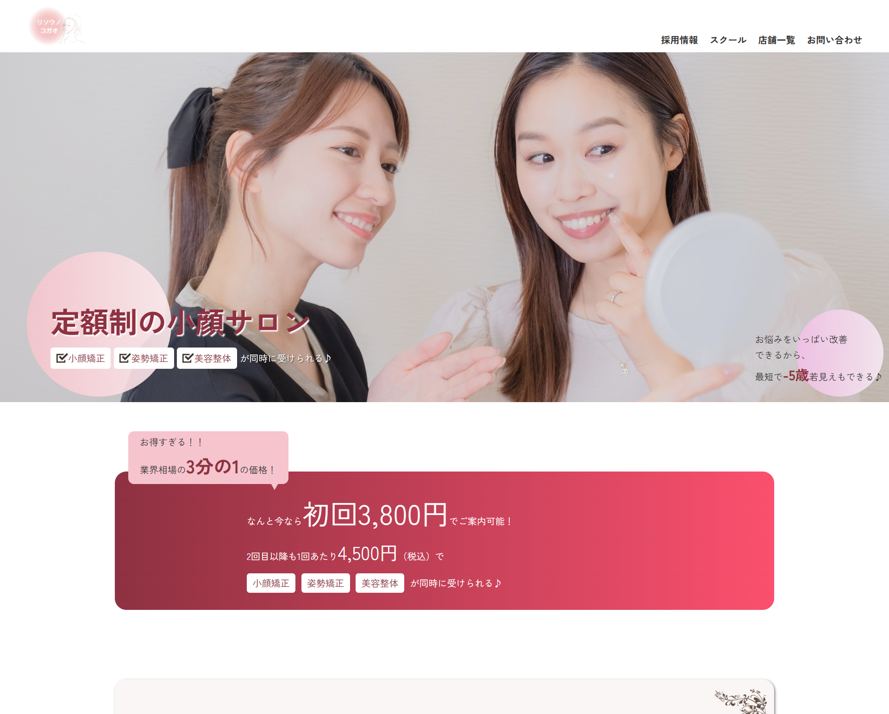

KOJIMA KYOKO
Works
制作物

Design/Cording/WordPress
webサイトの制作（全4ページ）
webサイトを見るクラウドソーシングを通じてご提案が採用され、制作を担当させていただきました。
デザインからWordPress化まで、幅広くウェブサイト制作に携わらせていただきました。
「20〜30代前半の女性に合うデザインにしてほしい」「色はロゴに合わせてほしい」というご要望を受け、メインカラーにピンク、アクセントカラーに赤紫を使用して全体をまとめました。
また、写真やボタンの角を丸くすることで親しみやすさを出し、文章には動きを加えて、読みやすく飽きにくい工夫をしました。
トップページや下層ページのランディングページ（LP）には、イラストやお店の様子、施術の写真を多数配置。これにより、サイトを訪れたお客様が内容をイメージしやすくなり、小顔矯正に対する心理的なハードルを下げることを目指しました。
さらに、お問い合わせページと店舗情報ページも設置しました。特に店舗情報ページには、店舗が増えた際にお客様自身で簡単に更新できる機能を備えています。
このように、使いやすさと親しみやすさを重視した設計を心がけました。
使用ツール：Figma
使用言語：HTML/CSS/jQuery/WordPress